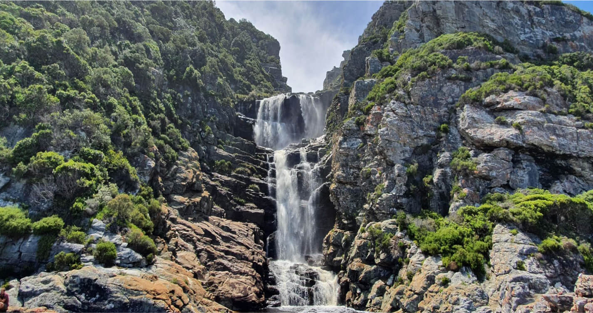
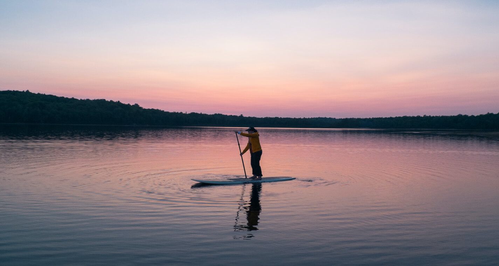

Activities in knysna
Ocean Oddyssey - Whale Watching -
Ocean Odyssey offers unforgettable marine adventures. Their close encounter, boat-based whale watching tours and marine eco-tours are perfect activities to add to any Knysna itinerary. They offer three daily departures and a fleet of ocean going vessels fit to traverse the Garden Route coastline. So if exploring Knysna's diverse sea ecosystem is something that excites you, look no further.

San Parks- Hiking Trails -
San Parks (South African National Parks) offer the most exquisite hiking routes. Whether you're a family looking to lightly stretch your legs in nature, or an avid hiker in search of a real challenge, San Parks has you covered. From wild waterfalls, to beautiful bird filled forests, their routes won't disappoint.
Knysna Charters- Supping and Other Activites -
Knysna Charters offer a wide range of activities ranging from boat charters and quad biking to oyster tours and stand up paddle board hire. If you're in search of fun, adventure filled activities for the whole family, they'll likely have something suitable.
